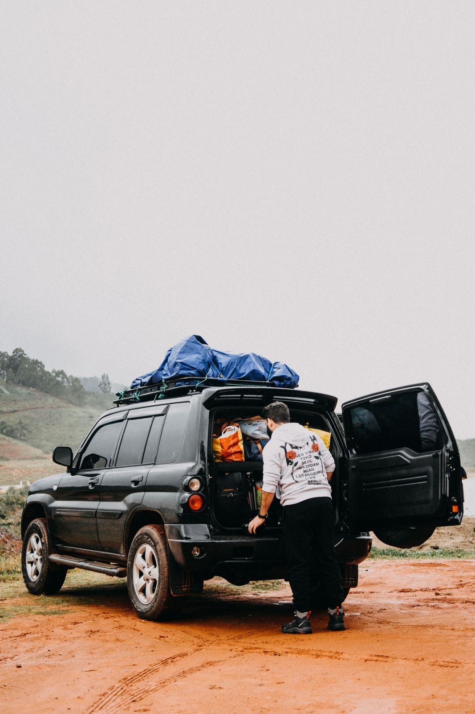

Holiday Travel Checklist: Don't Get Locked Out This Season

Loading up for the holidays — the exact moment keys get set down and doors swing shut.
The busiest travel weeks of the year are also prime time for lockouts, lost keys, and dead fobs. Packed cars, cold mornings, unfamiliar rentals, and a hundred distractions make it easy to set your keys down in the wrong place. Five minutes of prep before you leave saves you a roadside emergency 200 miles from home. Here's the checklist a locksmith would run before the holidays.
Need a spare before you go? Call (405) 870-5397.
Call Now — (405) 870-53971. Make a spare key before you leave — this is the big one
If your vehicle has only one working key, do this first. A spare that lives in your bag — not in the car — is the cheapest insurance there is. It's the difference between a two-minute swap and a stranded, all-keys-lost emergency far from home, where a replacement costs far more and takes far longer. We can cut and program a spare same-day before you leave the metro.
2. Check your key fob's battery
Cold weather saps fob batteries, and they always seem to die at the worst moment. If your fob's range has been getting shorter or the low-battery light has come on, swap the battery now and toss a spare coin-cell in the glovebox. It's a two-dollar fix that prevents a very inconvenient morning.
3. Find your fob's hidden mechanical key
Most key fobs have a small metal blade tucked inside — a release button or slider frees it. That blade lets you unlock the door by hand if the fob battery dies. Find it now and make sure it actually opens your driver's door, so you're not learning how it works in a cold, dark parking lot.
4. Mind your keys while you load up
A lot of holiday lockouts happen right in the driveway — keys set on the roof or the seat while you wrestle bags and car seats, then the door swings shut. Pick one habit: keys go in your pocket, not on a surface, until everyone's buckled and you're ready to roll.
5. Have a plan for the road
Before you leave, save the number of a licensed locksmith near your destination, and check whether your roadside or insurance plan covers lockouts — most do, and you can usually call a local pro yourself and submit the invoice for reimbursement. Calling local is almost always faster than waiting on a national dispatcher.
6. Lock up the house the smart way
Heading out for days? Don't hide a key under the mat or a flowerpot — that's the first place anyone looks. If you've handed keys to a dog-sitter or contractor and want a clean slate when you're back, a quick rekey is cheap peace of mind.
Before you leave the OKC metro, we'll cut you a spare, replace a tired fob battery, or rekey the house — same day, and we come to you.
Call (405) 870-5397 and travel easy.
Call Now — (405) 870-5397Frequently Asked Questions
Should I really get a spare key before a road trip?
Yes — it's the single best thing on this list. Replacing a lost-only key while you're traveling costs far more and can strand you for hours. A spare cut before you leave is cheap insurance.
What happens if my key fob dies while I'm traveling?
Most fobs have a hidden mechanical blade to unlock the door, but you'll still need the fob working to start most vehicles. Replace a weak battery before you go, and carry a spare coin-cell.
Can you make a spare key fast before I leave town?
Usually same-day. Give us the year, make, and model and call (405) 870-5397 — we'll get you a spare before your trip.
I'm locked out far from home. What now?
Call a licensed local locksmith at your location, and check your roadside or insurance coverage — many plans reimburse a lockout even if you called the locksmith yourself. Keep the itemized invoice to submit.